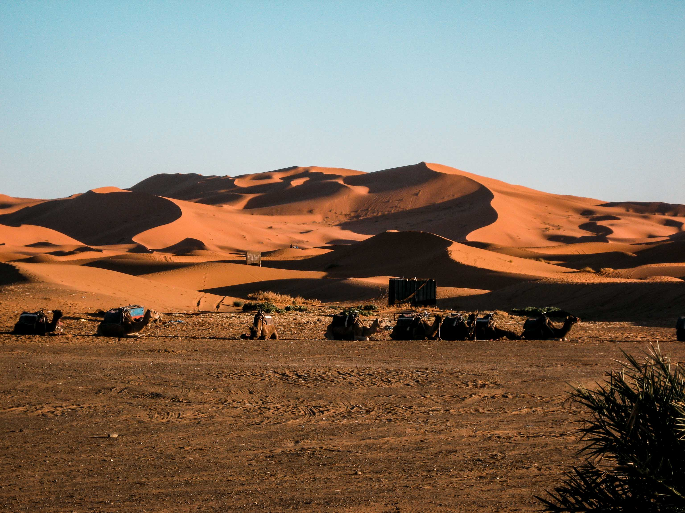

5 Days of Camel trekking and camping in the region of the Saharan village of M'Hamid El Ghizlane. The level of difficulty of this circuit is not so much determined by the height differences but by the tiring walking in the sand and the heat.
ZAGORA / JBEL BANI & DESERT CAMEL TREK
Day 1: Ouarzazate – Oulad Driss
Arrival at the airport and transfer by minibus or 4WD via Zagora, M’Hamid to Oulad Driss, the starting point of our hike where we will meet the camel drivers. Overnight stay in tents.
Day 2: Oulad Driss – Aït Ounir (5h30 walk)
After breakfast the caravan will rush towards the dunes of Erg Aït Ounir, lost in the forest of tamarisks. Overnight stay in tents.

Day 3: Aït Ounir – Erg Chegaga (5h30 walk)
Today our hike will lead us to the Erg Chegaga, the largest and still untouched erg of the Sahara. In the evening we will enjoy the fascinating sunset. Overnight stay in tents.
Day 4: Erg Chegaga – Bougerne (5h30 walk)
Walking towards the east via a large dry plateau on our way to the stunning dunes of Bougerne. Overnight stay in tents.
Day 5: Bougerne – Oued Naam (5h30 walk)
We’ll continue trekking through sand dunes, and meet groups of camels grazing under Tamarisk trees. Passing the immense grazing of Dayat Aoutit and a plateau without vegetation, we’ll arrive at our next bivouac in the dry riverbed Oued Naam. Overnight stay in tents.
.jpg)
Day 6: Oued Naam – Rgabi Aït Hssou (5h30 walk)
On our last day of hiking we’ll return to the region of M’hamid. Our trek ends in the small town of Rgabi Aït Hssou. Overnight stay in tents or an auberge.
Day 7: Rgabi Aït Hssou - Ouarzazate
After breakfast, transfer by 4WD or minibus to Ouarzazate. Return flight or overnight stay in a hotel and return flight the next day.